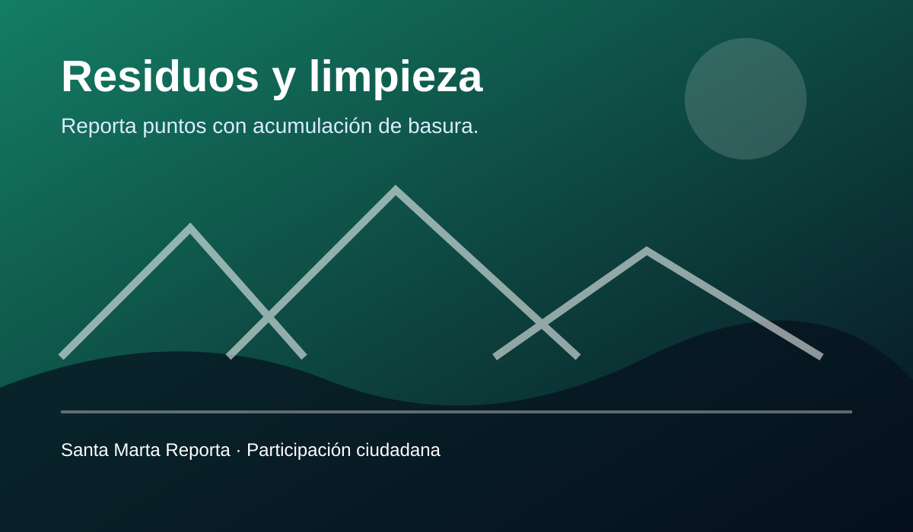
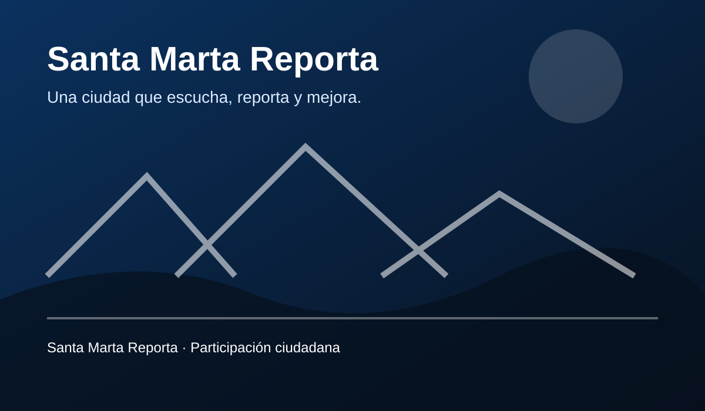
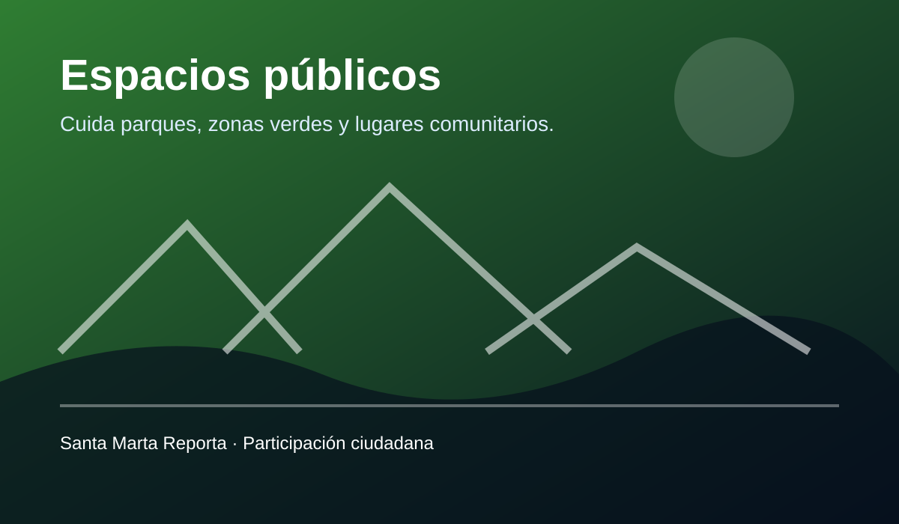
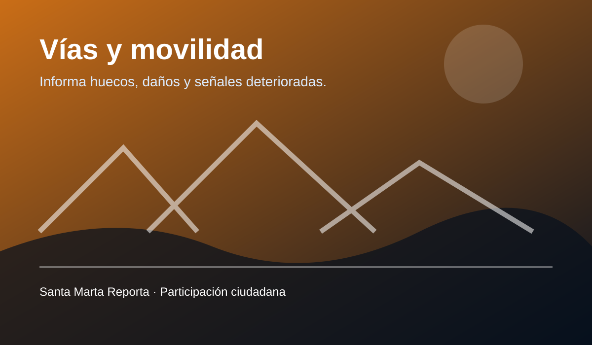
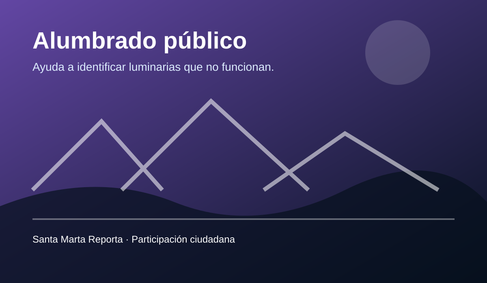
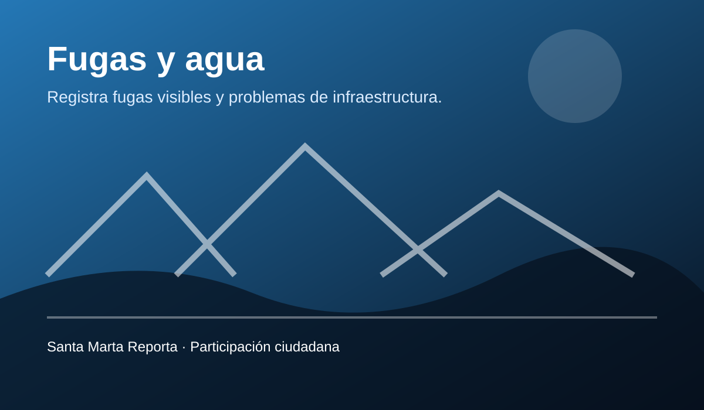
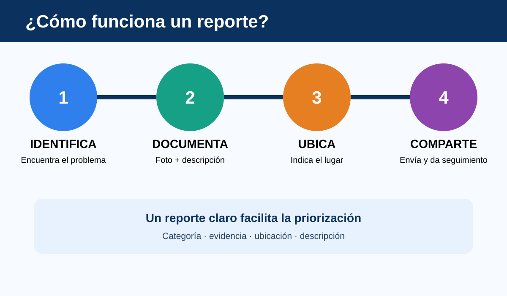

Residuos y limpieza
Acumulación de basura, puntos críticos o deterioro de condiciones de limpieza.
Una plataforma para que la comunidad pueda informar problemas del espacio público y aportar a una ciudad más limpia, segura y organizada.

Santa Marta Reporta nace como una propuesta digital para facilitar la comunicación entre la comunidad y quienes pueden atender situaciones que afectan el entorno.
La idea es reunir en un solo lugar la descripción, categoría, evidencia y ubicación de cada caso, de manera sencilla y comprensible.

Selecciona una categoría para explorar ejemplos de situaciones que pueden documentarse.

Acumulación de basura, puntos críticos o deterioro de condiciones de limpieza.

Huecos, daños en vías, señales deterioradas y situaciones que dificulten la movilidad.

Luminarias apagadas o problemas de iluminación en espacios de circulación.

Fugas visibles o afectaciones de infraestructura relacionadas con el agua.
Parques, zonas verdes, mobiliario o lugares comunitarios deteriorados.
La información visual y audiovisual ayuda a explicar mejor una situación y facilita su comprensión.
Video externo de YouTube. Fuente: Expedición Sam.
Video externo de YouTube. Fuente: Gabriel Por El Mundo.
Mensaje de introducción al proyecto.
GIF creado para representar visualmente la confirmación de un reporte.
Un buen reporte debe ser claro, verificable y útil para quien lo recibe.

Completa este formulario de demostración. Los datos no se envían a un servidor; el proyecto simula el registro usando JavaScript y almacenamiento local del navegador.
Participar también es cuidar. Una herramienta sencilla puede ayudar a organizar información, visibilizar necesidades y promover una relación más cercana entre ciudadanía y territorio.